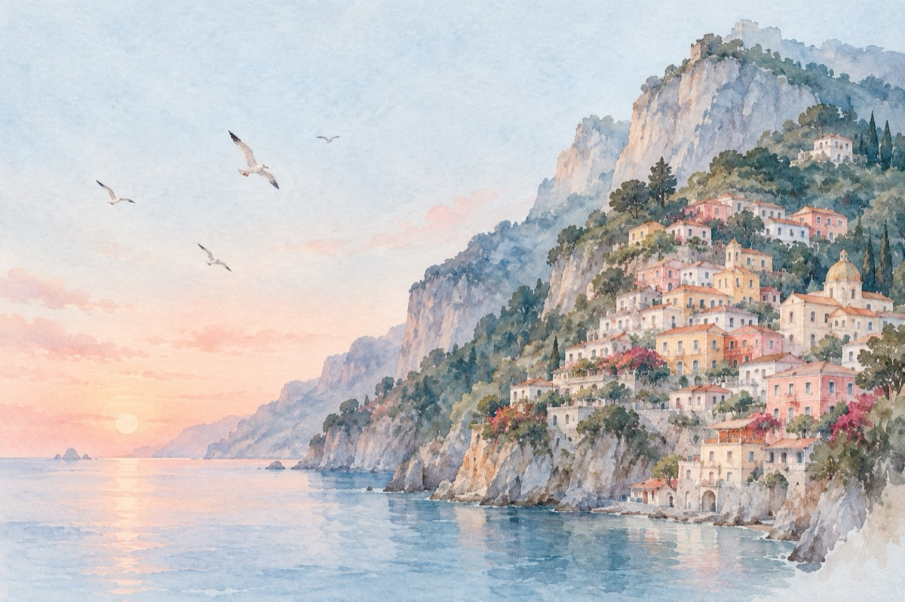

Positano
În vacanță la Positano, Italia.
Tace pământul ca un bătrân pe gânduri
Și marea-l mângâie, cum un zefir pădurea
Ei, pescărușii voiajează-n cârduri
Doar valurile se zbenguiesc aiurea.
Robust și harnic granitu-n munți se urcă
Ducând pădurea-n spate pân’la soare
Și îndrăzneț și sever spre ceruri se aruncă
Lăsând ca stelele să se coboare-n mare.
Dar mai întâi de toate-a fost cuvântul
Pe care neclarul din slăvi rostitu-l-a
Și-a construit cu el și cerul și pământul
Și oamenii ce sunt doar creatura Sa.
Și cum porunca dată-a fost să ne iubim
Și să creăm la rândul nostru: viață, cetăți și frumuseți
Cuvine-se lui Dumnezeu cu totul puterea să-i slăvim
Și soarelui ce vine de cu noapte-n dimineți.
Minunea se numește Positano și există
Și s-a născut cum un copil se naște
Natura fără Positano eu cred că era tristă
Și oricine lucrarea aceasta-o recunoaște.
Se spune că viața a apărut țâșnită dintre ape
Urcând spre-nalturi, treaptă după treaptă
A trebuit ca omul din când în când la ea să se adape
Și-a construit un Positano frumos ca o cetate.
Această fantezie cosmică și totuși omenească
Unică-n felul ei precum Mediterana
Și necesară și absolut firească
Astăzi ea ne oferă splendid această panoramă!
Vasile Groza